import pandas as pd
import matplotlib.pyplot as pltCustomizing Visualizations
Overview
This section gives several simple ways to customize visualizations in Python using Pandas and Matplotlib. It provides a brief overview of common customization options.
For a helpful introduction with examples, see the Visualization with Matplotlib chapter in The Python Data Science Handbook by Jake VanderPlas: Introduction to Matplotlib: Visualization with Matplotlib
For a full list of customization options and parameters, refer to the Matplotlib pyplot documentation https://matplotlib.org/stable/api/_as_gen/matplotlib.pyplot.html
Setup
Histograms
Basic Histogram
In this section, we customize a histogram showing the distribution of weekly internet usage (in hours).
gss["wwwhr"].plot(kind="hist")
plt.xlabel("Time (Hours)")
plt.ylabel("Frequency")
plt.title("Distribution of Weekly Internet Usage")
plt.show();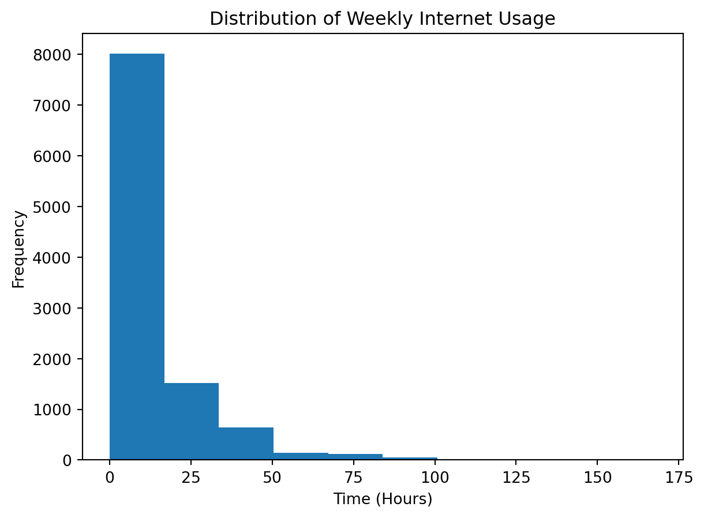
Number of Bins
You can control how the data is grouped using the bins parameter.
- More bins show more detail
- Fewer bins show a smoother, less detailed distribution
gss["wwwhr"].plot(kind="hist", bins=20)
plt.xlabel("Time (Hours)")
plt.ylabel("Frequency")
plt.title("Distribution of Weekly Internet Usage")
plt.show();Bar Color and Borders
You can change the color of the bars and add borders to make them easier to distinguish.
colorsets the fill color
edgecolorsets the border color
gss["wwwhr"].plot(kind="hist", bins=20, color="teal", edgecolor="white")
plt.xlabel("Time (Hours)")
plt.ylabel("Frequency")
plt.title("Distribution of Weekly Internet Usage")
plt.show();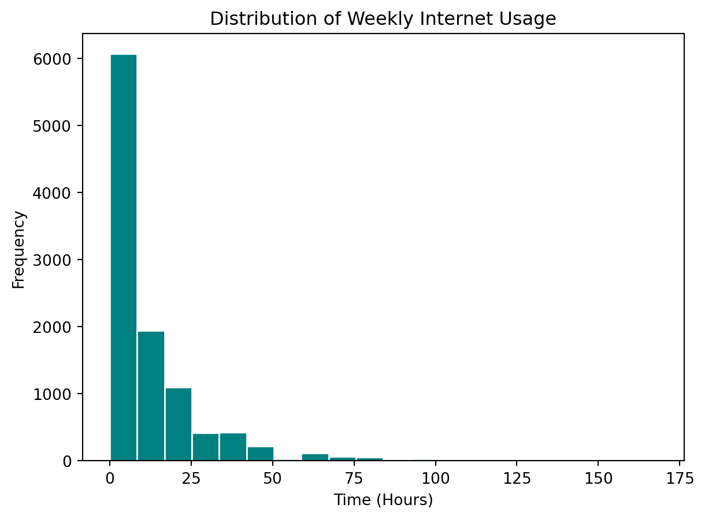
Box Plots
Basic Box Plot
In this section, we customize a box plot showing the distribution of weekly internet usage (in hours) across groups.
gss.boxplot("wwwhr")
plt.xlabel("Time (Hours)")
plt.title("Distribution of Weekly Internet Usage")
plt.suptitle("")
plt.show();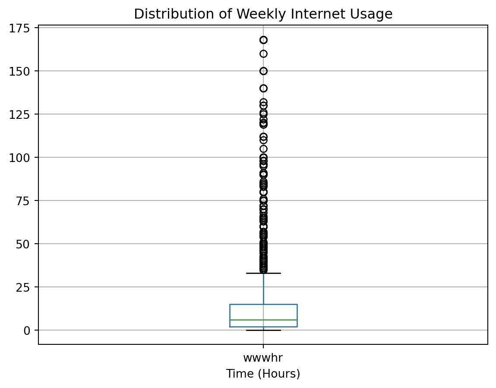
Grid and Orientation
You can remove the grid and change the orientation of a box plot to make it easier to read.
grid=Falseremoves the gridlinesvert=Truecreates a vertical box plot
vert=Falsecreates a horizontal box plot
A horizontal box plot is often easier to read, especially when labels are long.
gss.boxplot("wwwhr", vert=False, grid=False)
plt.xlabel("Time (Hours)")
plt.title("Distribution of Weekly Internet Usage")
plt.suptitle("")
plt.show();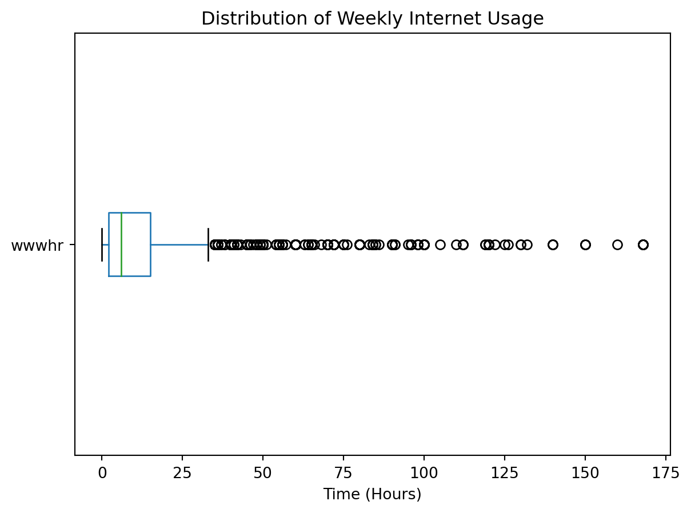
Grouping
You can create multiple box plots to compare distributions across groups using the by parameter.
gss.boxplot(column="wwwhr", by="age_group", vert=False, grid=False)
plt.xlabel("Time (Hours)")
plt.ylabel("")
plt.title("Weekly Internet Usage by Age Group")
plt.suptitle("")
plt.show();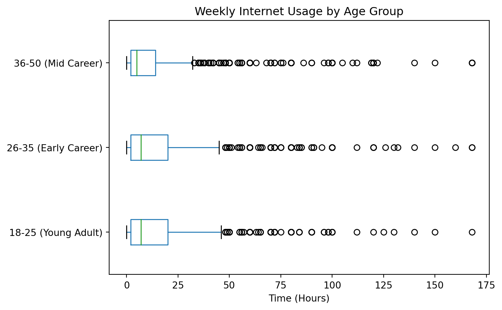
Bar Charts
In this section, we customize a bar chart showing the number of respondents in age group across all survey years.
Basic Bar Chart
age_group_count.plot(kind="bar")
plt.xlabel("")
plt.ylabel("Count")
plt.title("Distribution of Age Groups")
plt.show();
Bar Color and Borders
You can change the color of the bars and add borders to make them easier to distinguish.
colorsets the fill color of the bars
edgecolorsets the border color
linewidthcontrols the thickness of the border
Some common color choices include "blue", "red", "green", "purple", and "teal".
age_group_count.plot(kind="bar", color="teal", edgecolor="black", linewidth=1)
plt.xlabel("")
plt.ylabel("Count")
plt.title("Distribution of Age Groups")
plt.show();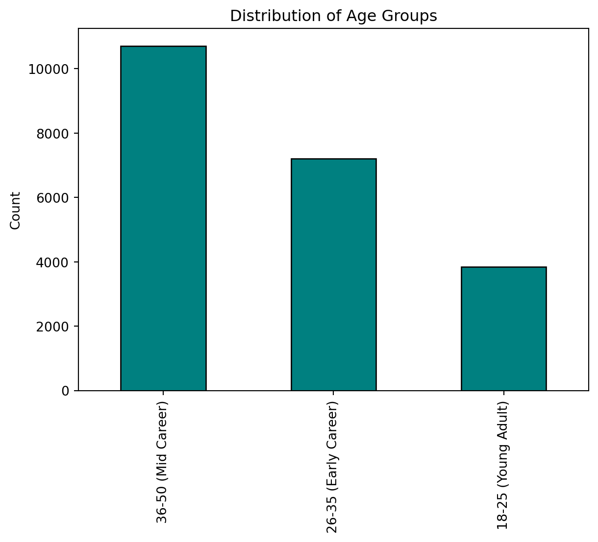
Tick Labels
You can customize tick labels to improve readability.
- Rotate labels if they overlap
- Adjust their size if needed
age_group_count.plot(kind="bar", color="teal", edgecolor="black", linewidth=1)
plt.xticks(rotation=0)
plt.xlabel("")
plt.ylabel("Count")
plt.title("Distribution of Age Groups")
plt.show();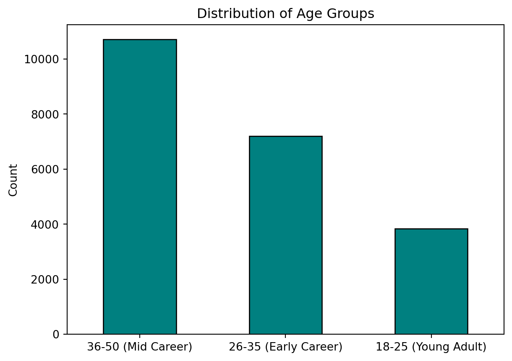
Legend
A legend helps identify groups when there are multiple sets of bars.
age_group_happy_count.plot(kind="bar", edgecolor="white", linewidth=1)
plt.xticks(rotation=0)
plt.xlabel("")
plt.ylabel("Count")
plt.title("Distribution of Happiness Level by Age Group")
# Add legend and customize legend title
plt.legend(title="Happiness Categories")
plt.show();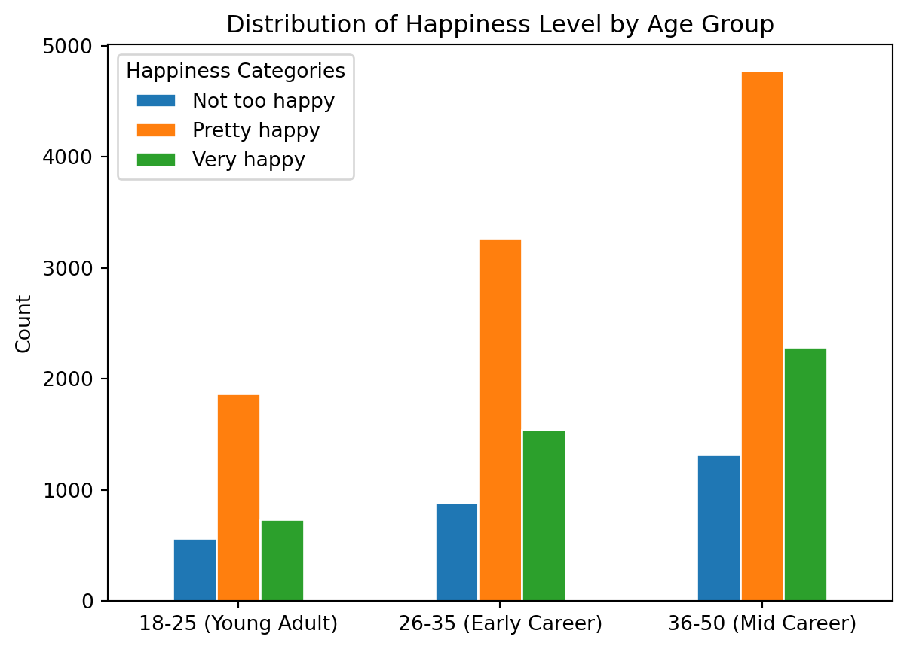
Line Charts
In this section, we customize a line chart showing the mean weekly internet usage (in hours) by survey year.
Basic Line Chart
mean_wwwhr.plot()
plt.xlabel("")
plt.ylabel("Time (Hours)")
plt.title("Mean Weekly Internet Usage by Survey Year")
plt.show();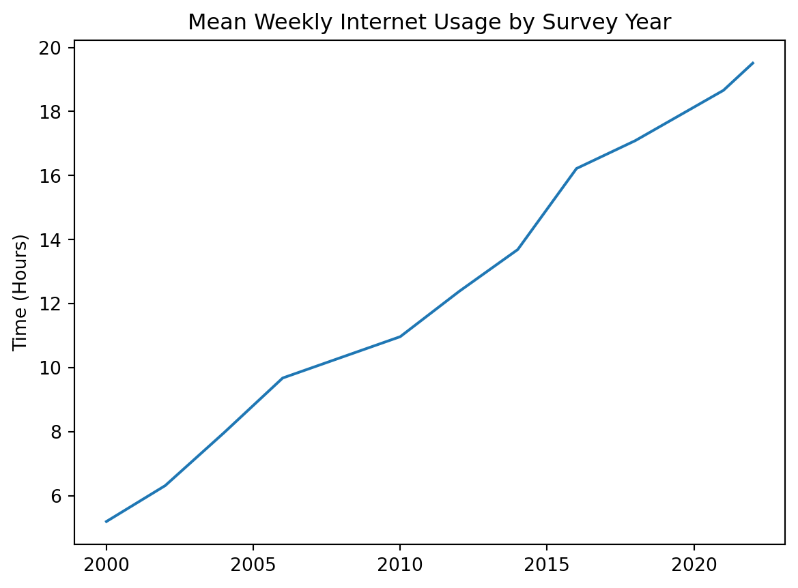
Markers and Lines
You can add a marker and change the color of the line to make the graph more visually distinctive.
Markers show the individual data points on a line. They help you see exactly where each value occurs, rather than just the overall trend.
Common marker styles include:
"o"for circles"s"for squares"^"for triangles"x"for x-shaped markers"*"for stars
You can also adjust the marker size using the markersize parameter:
- Larger values make markers easier to see
- Smaller values reduce clutter when there are many points
For example:
markersize=4(smaller markers)markersize=8(larger markers)
Some common color choices include "blue", "red", "green", "purple", and "teal".
You can also adjust the line width using the linewidth parameter:
- Thicker lines make trends easier to see
- Thinner lines can make the plot look less crowded
For example:
linewidth=1(thin line)linewidth=3(thicker line)
mean_wwwhr.plot(marker="o", markersize=4, linewidth=1, color="teal")
plt.xlabel("")
plt.ylabel("Time (Hours)")
plt.title("Mean Weekly Internet Usage by Survey Year")
plt.show();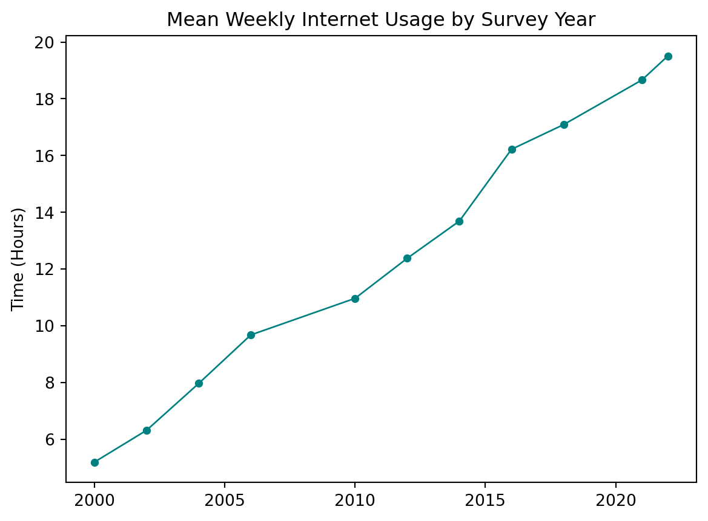
Line Style
You can change how the line connecting the points looks.
mean_wwwhr.plot(marker="o", color="teal", linestyle=":")
plt.xlabel("")
plt.ylabel("Time (Hours)")
plt.title("Mean Weekly Internet Usage by Survey Year")
plt.show();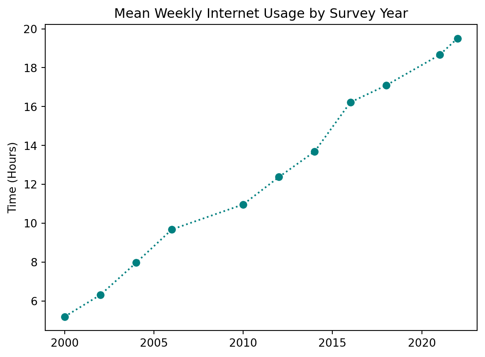
Some line style options include:
"-"for solid"--"for dashed":"for dotted"-."for dash-dot
Tick Labels
You can customize tick labels by specifying which values appear on the axis, rotating them, or adjusting their size to improve readability.
# Create evenly spaced tick marks every two years
# using range(start, stop, step)
wwwhr_years = range(2000, 2024, 2)
mean_wwwhr.plot(marker="o", color="teal", linestyle=":")
plt.xticks(wwwhr_years, rotation=45)
plt.xlabel("")
plt.ylabel("Time (Hours)")
plt.title("Mean Weekly Internet Usage by Survey Year")
plt.show();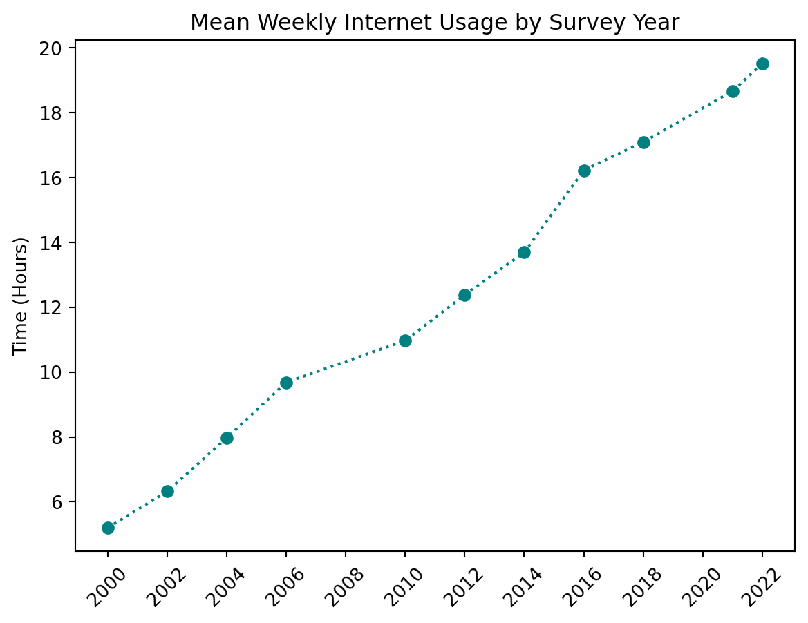
Gridlines
Gridlines can make it easier to estimate values from the graph.
# Create evenly spaced tick marks every two years
wwwhr_years = range(2000, 2024, 2)
mean_wwwhr.plot(marker="o", color="teal", linestyle=":")
plt.xticks(wwwhr_years, rotation=45)
plt.xlabel("")
plt.ylabel("Time (Hours)")
plt.title("Mean Weekly Internet Usage by Survey Year")
# Add horizontal gridlines aligned with tick marks
plt.grid(axis="y", linestyle=":", alpha=0.8)
plt.show();Legend
A legend helps identify each line, especially when working with graphs that have more than one line.
In this section, we customize a line chart showing the mean weekly internet usage (in hours) by age group and survey year.
# Create evenly spaced tick marks every two years
wwwhr_years = range(2000, 2024, 2)
mean_wwwhr_age_groups.plot(marker="o")
plt.xticks(wwwhr_years, rotation=45)
plt.xlabel("")
plt.ylabel("Time (Hours)")
plt.title("Mean Weekly Internet Usage by Survey Year")
# Add horizontal gridlines aligned with tick marks
plt.grid(axis="y", linestyle=":", alpha=0.6)
# Add a legend
plt.legend()
plt.show();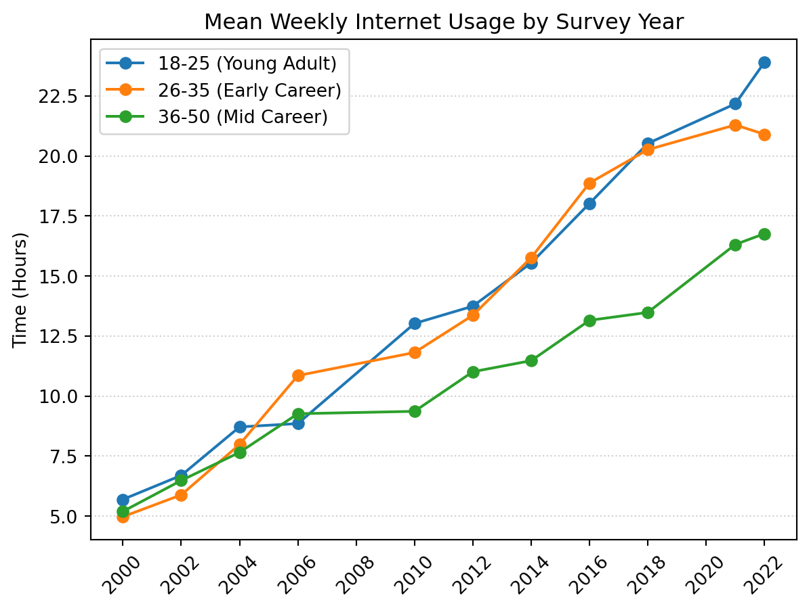